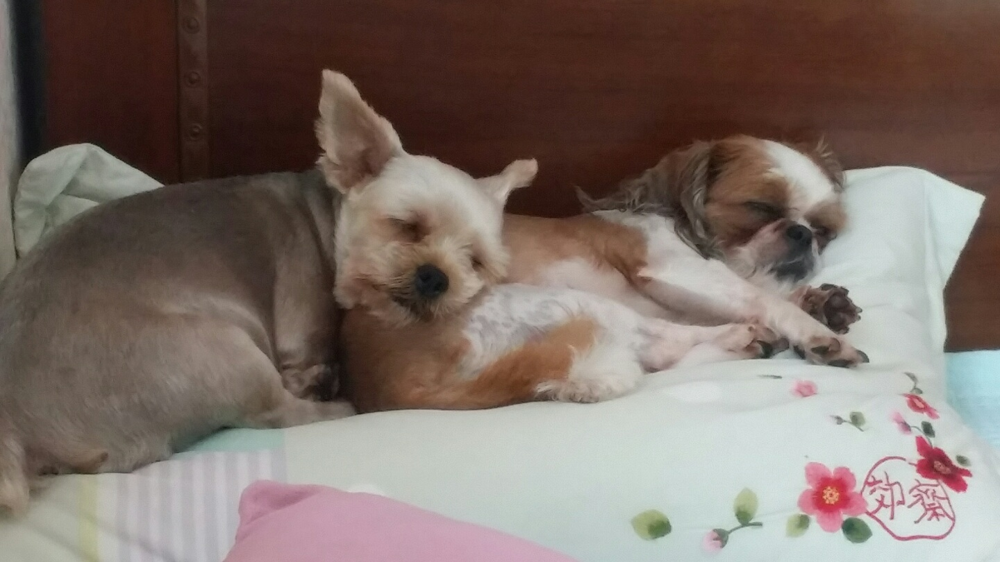

Morning: 사람들이 일어나면 같이 기상함. 일어나면 나가자고 쳐다봄. 주로 오전 9시경 산책을 나감. 산책이 하루의 중요 일과. 기분과 꼬리의 높이가 비례함. 자기보다 큰 덩치의 강아지들은 싫어하고, 고양이를 발견하면 돌진함. 아침 산책을 나가면 주로 소변, 대변을 한번씩 봄. 산책에서 돌아오면 발을 씻고, 간식을 얻어먹음. 그리고 주로 낮잠을 자기 시작함.
Day: 우후엔 주로 사람들이 없어서 잠을 자는 시간이 대부분인듯. 오후에 잠깐 아빠나 내가 들어와서 산책을 나가곤 했음. 하루 한끼는 오후 산책을 다녀온 뒤에 줌. 사료는 별로 안좋아해서 이틀에 한번 꼴로 밥을 먹으나, 입을 대기 시작하면 그릇을 전부 비움. 간식은 덤벨보다는 우유 개껌에 고기가 붙어있는 종류의 간식을 좋아함.
Night: 저녁엔 주로 잠을 잠. 하루에 최소 20시간을 잔다고 봐도 될 정도로, 대부분 시간을 잠에 할애함.
